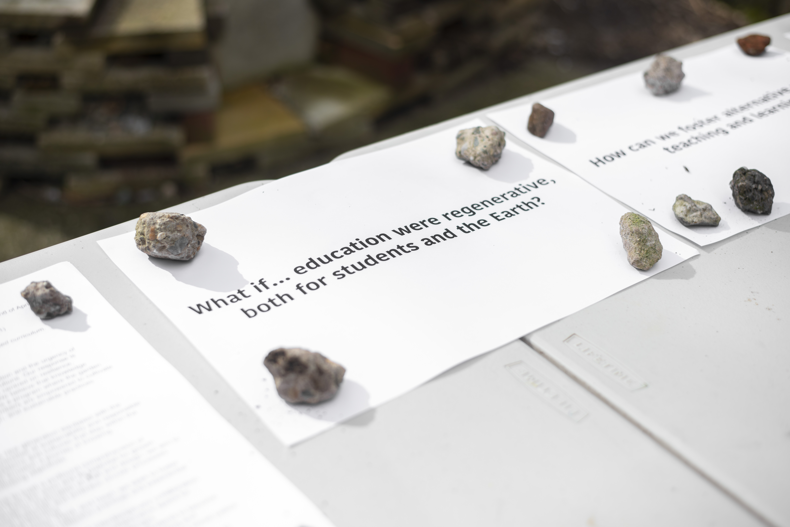
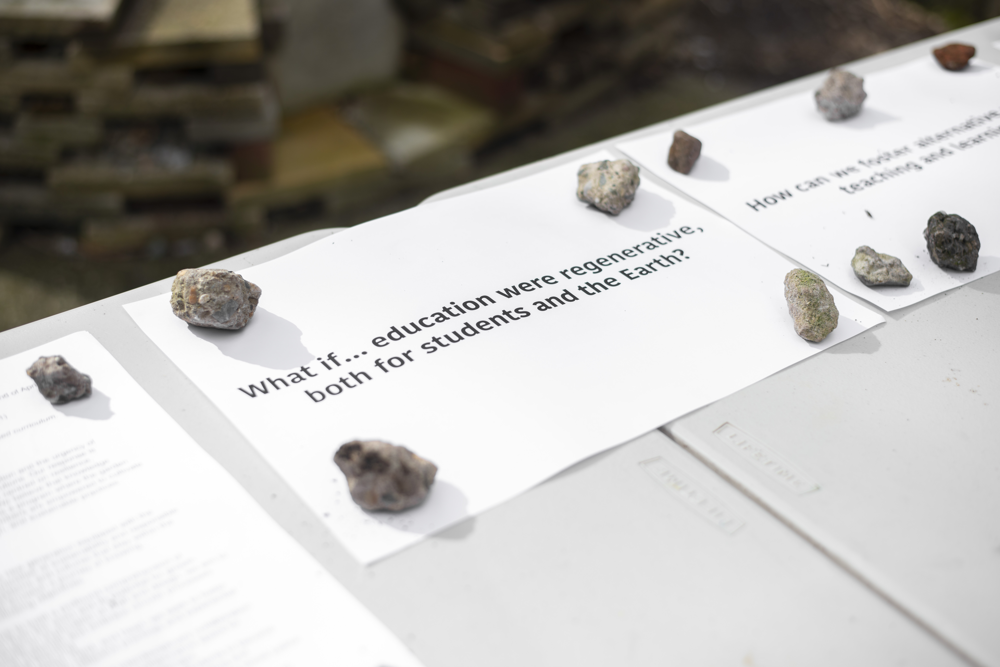
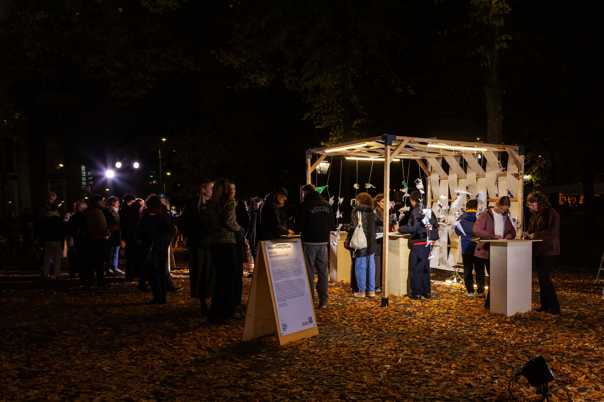
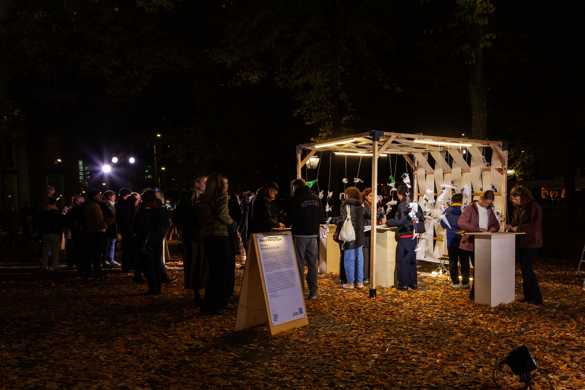
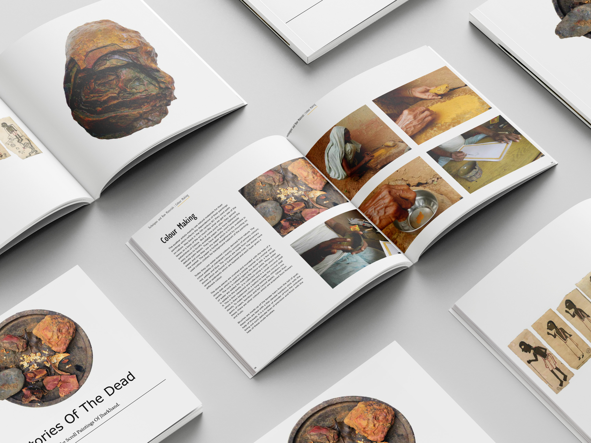
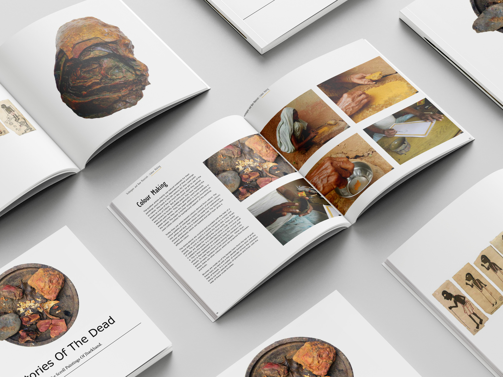

Crafting Contagious Connections – Pedagogies of Hands

Pedagogies of hands emerged from my interest in shaping a space where learning is embodied, relational, and vibrantly alive, where the hands, heart, and head come together. Inspired by my grandmother’s tactile ways of teaching, the project bridges vernacular, experiential learning with more abstract forms of modern education.
The project took shape in the KABK garden as a participatory space for workshops in spinning, natural dyeing, and eco-printing, using mostly local materials. The structure itself was built entirely from found and repurposed materials, using old fabrics, reclaimed wood, and traditional wooden joints without a single metal screw. This choice reflected the project’s ethos of care, circularity, and connection to the rhythms of the craftsmanship.
It became a living, breathing space of intergenerational exchange and shared curiosity, where learning happens through doing, reflecting, and doing again. Rooted in John Dewey’s ideas of experiential learning, Crafting Contagious Connections questions the Western tendency toward detached, theoretical education. Instead, it invites a more holistic, inclusive, and nature-integrated way of learning, one that values creativity, regeneration, and deep, tactile understanding.
More: https://graduation.kabk.nl/2024/akash-kumar →Rooting Ecologies
 

Rooting Ecologies is an ongoing action based research that explores how gardens can become spaces of learning, negotiation, and regeneration in a time of climate disaster. The work draws inspiration from my upbringing in my grandmother's garden and further developed at the Kabk garden in The Hague. Within such spaces, Rooting Ecologies cultivates encounters between people, soil, and place, transforming the act of gardening into a form of research, conversation, and care.
In this project, the garden becomes more than a place of cultivation; it serves as a shared space for coexistence and embodied relational dialogue, where questions about the global and the bioregional are explored alongside more-than-human living systems. Each seed sown, each bee pollinating, and each weed pulled becomes part of a wider inquiry into how we might inhabit the Earth differently: how we might reconnect with the material and how artists respond to realities that sustain us, and how education itself might take root in the regenerative living world.
In an age defined by environmental collapse, Rooting Ecologies argues that every institution of higher education should nurture a garden, not as an ornamental gesture, but as an essential institutional infrastructure embedded in the curriculum for learning. Gardens bring climate literacy into the body, reconnecting knowledge to place and time. They teach patience, collaboration, care, solidarity and reciprocity. They reveal that the challenges of the Anthropocene are not abstract or distant, but embedded in the very soil beneath our feet.
Seed is not just the source of life. It is the very foundation of our being. Vandana Shiva……
Explore More →Beyond Borders: Material Culture
Beyond Borders unfolds as a living story, a performative experience where materials speak, move, and remember. It invites us to trace the hidden pathways of the things that surround us: the fibers we wear, the metals we shape, the clays we mold, the plastics that drift across oceans. Each carries its own rhythm, its own geography, its own memory of touch and transformation.
This experience explores how matter travels, mined, grown, traded, assembled, discarded, crossing borders both visible and invisible. Materials shift forms and meanings as they move through hands, lands, and systems of value. They become part of global choreographies of exchange, revealing our deep entanglement with worlds of production and desire.
Through storytelling, gesture, and sensory engagement, Beyond Borders invites participants to listen to the voices of materials, to sense the distance they have travelled, the care or neglect they have received, the lives they have shaped. Each object becomes a witness to human intention and ecological consequence, holding within it traces of extraction, transformation, and imagination.
The storytelling flows between stillness and movement, echoing the tension between tradition and industrial speed, between reverence and consumption. It asks: What does it mean to live among things that have crossed the world to reach us? How are we changed by what we touch, wear, and discard? What stories do our materials tell when we finally stop to listen?
Beyond Borders is a space of reflection, a soft resistance to forgetfulness. It reminds us that every object, every thread, every fragment of matter is part of a vast, interconnected narrative. To encounter material is to encounter the world itself, its histories, its violences, its tenderness. Here, the performance is not just seen or heard, but felt, performed, a shared act of remembering that there is life within the things we find, make, use, and become.
House of Making
 

House of Making is a modular, evolving, movable public pavilion where creativity, learning, and community come together through simple acts of making. Designed to open and close like a living organism, its structure adapts to the rhythm of people and activities, expanding for collective exchange or folding inward for moments of quiet reflection. Depending on its form, it can host intimate gatherings or larger communal sessions, embodying flexibility, participation, and inclusivity.
Built from accessible, sustainable materials and guided by hands-on exploration, House of Making invites people to reconnect with creation and with one another. It functions as a living system that gathers intangible traces, public voices, and relationships that emerge through coming together. In doing so, it reveals how design can respond to social contexts, nurture dialogue, and hold space for diverse ways of knowing.
Here, process matters more than perfection. Every idea and gesture becomes a conversation between people and their environment, between tradition and innovation, between process and possibility. House of Making is a space where making becomes a shared language, one that connects individuals in imagining more inclusive and interconnected futures.
Making Paper, Making Place


Making Paper, Making Place is an ongoing hands-on workshop series exploring the connections between craft, ecology, and community. Through foraging for papermaking, participants use locally sourced and found materials, leaves, grasses, seed pods, old notes, and fabric scraps, to create handmade paper that embodies the landscape around them. The workshop invites reflection on sustainability and the creative potential of what already exists in our environments.
Foraging becomes an act of awareness, linking artistic process to ecological cycles and mindful making. Participants learn simple papermaking and bookbinding techniques while engaging in a shared exploration of place and material transformation. The outcome, a collective sheet of handmade paper, captures the textures, colours, and stories of the day, offering both a personal artefact and a communal record of connection between people, materials, and the natural world.
Grassland Crafted
The work explores the potential of Dutch grasses as sustainable, locally rooted materials for contemporary craft and design. By foraging, processing, and transforming these often-overlooked plants, the project reimagines grass as a renewable resource while highlighting ecological awareness and cultural continuity.
Using traditional techniques, the work merges craft with regenerative design principles. Collaborating with local landscapes and communities, the project celebrates the versatility of grasses, demonstrating how everyday materials can inspire sustainable practices and meaningful connections to place.
More: Material future Bank → More: Low Food Lab →Craft Document
 

A document that captures the tacit knowledge embedded in traditional craft practices, the gestures, materials, and wisdom that live in the hands of makers.
This edition focuses on Paitker painting, an ancient scroll art practised by tribal communities in Jharkhand, India. Through photography, video, writing, and participatory documentation, the project records not only the finished artworks but also the processes behind them, from preparing natural dyes from stones to crafting bamboo and squirrel-hair brushes.
While this phase of Craft Document has concluded, the impulse to explore and to understand craft knowledge continues, guided by a commitment to preserving the unspoken, embodied wisdom that sustains traditional making practices.
Ramming Earth Natural Building

For generations, Indigenous communities across the world have built with the earth beneath their feet, cultivating deep knowledge of soil, climate, and place. This embodied understanding of material behaviour, how soil compacts, breathes, and insulates, emerges from an intimate, reciprocal relationship with the land. Building with earth is not merely a technique; it is a living cultural practice rooted in continuity, care, and ecology
I grew up in a mud house with my grandmother, where every wall held the warmth of her hands and the rhythm of the seasons. Each month, she renewed the surface with a fresh layer of local clay plaster mixed with natural glue, an act of maintenance that was also an act of love. The house was alive, responding to rain, heat, and time. Through her, I learned that the home was not something we possessed, but something we tended, nourished, and lived with.
Revisiting these ways of building is a decolonial gesture, an act of remembering and reclaiming knowledge systems that have long been marginalised by modern industrial construction. It resists the erasure of Indigenous practices and challenges dominant narratives of progress that equate modernity with concrete, steel, and extraction. By working with soil, i participate in a slow, grounded form of making that honours the intelligence of place and the wisdom of those who came before us.
As the scholar and writer Vandana Shiva reminds us, “Decolonization begins with the soil.” To build with earth is to engage in a politics of belonging, to restore a dialogue between hand, material, and landscape. In this way, earth architecture becomes both a method and a metaphor for healing: reconnecting human and environment, craft and community, memory and future.